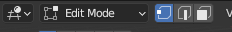
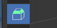

Key map
快捷鍵¶
/: 全域視圖/局部視圖H/Alt + H: 隱藏與取消隱藏ctrl+space: 窗口最大化shift+ 中鍵 : 平移攝影機+,-: 縮放1,3,7: 前視圖、右視圖、頂視圖shift+ ` : 漫遊模式shift + a: 新增物件W: 選擇模式切換B: 框選C: 刷選ctrl+滑鼠右鍵: 套選shift+S: 吸附菜單G: 抓取R: 旋轉S: 縮放X,Y,Z: 鎖定global axisshift+D: 創造 copy (完全獨立)alt+D: 創造copy (數據同步)F2: 重命名物件F3: 搜尋tab: switch between Object Mode and Edit Modectrl + tab: 調用出所選物件的交互模式Z: 改變著色器模式ctrl + O: 開啟.blend文件- 編輯模式
T: 工具欄ctrl + V: 頂點ctrl + E: 邊ctrl + F: 面ctrl + "+"or “-” : 拓展相連元素F9: 最短路徑選擇ctrl + L: 關聯選擇alt + LMB: 選取環邊ctrl + alt + LMB: 選取並排邊shift + G: 選擇相似元素w
建模工具¶

- 頂點、邊、面
- 倒角
- 
ctrl +B- 滾輪增加或減少倒角細分數
P移動滑鼠更改倒角形狀- 切分
F3搜尋 Bisect- 布爾操作 (Intersect Boolean) 與切刀交切 (Intersect Knife)
ctrl + F內尋找- 切出相交線，或是增加或減去與另一物件相交的區域
- 橋接連結邊 (Bridge Edit Loops)
- 連接若干相鄰的循環邊，通常會建立出一組新的面
ctrl + E進入邊工具選單，選用橋連接邊環工具- 連結 (Connect)
J- 用於兩頂點之間創建一條新邊
- 刪除與融合
x- 快速刪除：
ctrl + x - 可以刪除頂點、邊或面
- 融合(Dissolve)不會讓元素消失，而是會進行簡化
F可以用在節省時間，一件融合想要的面- 複製(Duplicate)
- 複製網格的一部分並放到別處
shift + D- 擠出(Extrude)
E- 可以按
X,Y,Z約束向量 - 填充與網格填充(Fill, Grid Fill)
Alt + F進行填充ctrl + F開啟選單，進行網格填充- 內插(Inset)
I- 與擠出類似，在原網格內部創建新面
- 合併(Join)
- 要在物件模式下，選擇多個物件，並用
ctrl + J進行合併 - 切割
K- 分割成不同物件
- 選取完後按
enter鍵套用結果 - 投影切割(Knife Project)
Mesh選單->Knife Project- 透過將另一網格的輪廓投影到某網格表面進行切割
- 要有另一網格才能進行穿透切割
- 環切並滑移(Loop Cut and Slide)
ctrl + R- 滑鼠移到3D模型上，以挑選要添加環狀邊的位置
- 滾輪調整環邊數量
- 創建邊/面
F- 在兩個元素之間創造一條邊或一個面
- 合併 (Merge)
M- 選擇兩個或更多頂點、邊或面
- 偏移邊線並滑移 (Offset Edge Slide)
- 選取一條或多條邊
ctrl + shift + R- 創造出兩條平行線，分別位於最初選中的那條邊的兩側
- 尖分(Poke)
- Menu
Face->Poke face - 在所有選中的面元素中央創立一個頂點
- 斷離(Rip)
V- 僅適用於頂點，將選中的一個或多個頂點斷開
- 填補斷離(Rip Fill)
alt + V- 與上相同，多了自動填充孔洞
- 分離 (Separate)
P- 將網格分離成獨立的物體
- Selection : 從選區中分離
- By Material : 將網格上使用不同材質的部分各自分離
- By Loose Parts : 將網格上互不相連的部分各自分離
- 法向縮放 (Shrink\Flattern)
Alt + S- 將選中的點、邊或面沿元素自身的法線方向縮放
- 滑移 (Slide)
- 點沿邊移動，或邊沿面移動
- 點 :
shift + V - 邊 :
ctrl + E進入選單，選擇邊滑移(Edge Slide) G + G為通用快捷鍵- 平滑頂點 (Smooth Vertex)
- 移除突出結構，或是讓元素變更加均勻
- 選擇一組頂點、邊或面
- 從工具欄中選擇平滑頂點工具
- 生成厚度 (Solidify)
ctrl + F- 選擇要添加厚度的面
- 旋繞(Spin)
- Menu
Mesh->Extrude->Spin - 選擇一個或一組頂點、繞著3D游標擠出
- 拆分 (Split)
Y- 將選區從網格上拆分下來
- 細分 (Subdivide)
- 右鍵->細分選項
- 邊可被一分為二、面可被一分為四